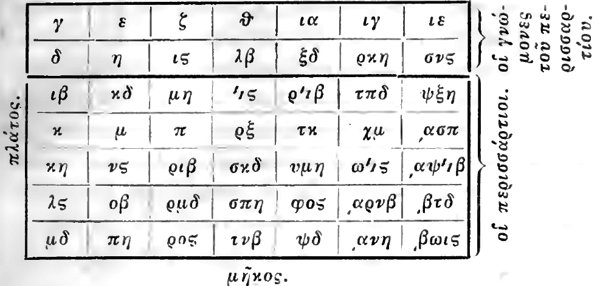

Chapter 10: The Odd-Times Even Number — Greek (Hoche 1866)¶
Ἀριθμητικὴ Εἰσαγωγή, Book I, Ch. 10 (ed. R. Hoche, Teubner, 1866)
ι. Περισσάρτιος δέ ἐστιν ἀριθμὸς ὁ τὸ τρίτον εἶδος τοῦ ἀρτίου ἐμφαίνων, κοινὸς ὢν ἀμφοτέρων τῶν εἰρημένων ὡσανεὶ δύο ἀκροτήτων μία τις ὢν αὐτὸς μεσότης· ὅμοιος γὰρ κατὰ μέν τι τῷ ἀρτιάκις ἀρτίῳ ὑπάρχει, κατὰ δέ τι τῷ ἀρτιοπερίσσῳ, καὶ ᾧ μὲν τοῦ ἑτέρου ἀπήλλακται, τούτῳ κοινωνεῖ τῷ λοιπῷ, ᾧ δὲ κοινόν τι ἔχει πρὸς ἕτερον, τούτῳ διαφέρει τοῦ λοιποῦ. ἔστι δέ, ὅταν ἀριθμὸς ἄρτιος
f. 0040 · p. 22εἰς δύο ἶσα διαιρεθῆναι δυνάμενος διαιρούμενα ὁμοίως τὰ ἑαυτοῦ μέρη ἔχῃ, ἔστι δʼ ὅτε καὶ τῶν μερῶν τὰ μέρη, μέχρι μέντοι μονάδος μὴ δυνάμενος τὴν τῶν μερῶν λύσιν ἀγαγεῖν· οἷός ἐστιν
ἥμισυ μὲν γὰρ ἕκαστος τούτων ἴδιον ἔχει καὶ πάντως ἡμίσους ἥμισυ· ἔστι δʼ ὅτε ἐν αὐτοῖς τις εὑρίσκεται καὶ ἐπὶ πλέον τὸν διχασμὸν ἐπιδεχόμενος εἰς τὰ μέρη, οὐδεὶς μέντοι τὸ παράπαν μέχρι τῆς φύσει ἀτόμου μονάδος τὰ μέρη μεριστὰ εἰς ἡμίση ἕξει. τῷ μὲν οὖν πλείονας μιᾶς τομῆς ἐπιδέχεσθαι ὁμοιοῦται μὲν τῷ ἀρτιάκις ἀρτίῳ, ἀφίσταται δὲ τοῦ ἀρτιοπερίσσου, τῷ δὲ μὴ ἀπολήγειν ποτὲ εἰς μονάδα αὐτοῦ τὰς τομὰς ὁμοιοῦται μὲν τῷ ἀρτιοπερίσσῳ, ἀφίσταται δὲ τοῦ ἀρτιάκις ἀρτίου. συμβέβηκε δʼ αὐτῷ μόνῳ ὑφʼ ἓν τὰ ἑκατέρῳ ἐκείνων ἰδίως συμβεβηκότα καὶ πάλιν ἃ μηδετέρῳ· καὶ γὰρ ἐκείνων ὁ μὲν τὸ μέγιστον μόνον μέρος εἶχε τμητόν, ὁ δὲ τὸ μικρότατον μόνον ἄτμητον, οὗτος δὲ οὐδέτερον· πλείονα μὲν γὰρ τοῦ ἑνὸς τμήματα ἐν τῷ μείζονι μέρει ἔχων ὁρᾶται, πλείονα δὲ τοῦ ἑνὸς ἄτμητα ἐν τῷ ἐλάττονι. καὶ πάλιν ἐστὶν ἐν αὐτῷ τινα μὲν μέρη μὴ ἐναντιωνυμοῦντα ταῖς δυνάμεσι μηδʼ ἑτερογενοῦντα πρὸς
f. 0041 · p. 23αὐτὰς κατʼ εἰκόνα τοῦ ἀρτιάκις ἀρτίου, ἔνεστι δὲ πάντως καὶ ἕτερα ἐναντιωνυμούμενα ἑτερογενῶς ὑπὸ τῶν δυνάμεων κατʼ εἰκόνα τοῦ ἀρτιοπερίσσου· οἷον ἐν τῷ κδ οὐκ ἐναντιωνυμεῖ μὲν μέρη δυνάμεσι, τέταρτον ϛ, ἥμισυ ιβ, ἕκτον δ, δωδέκατον β, ἐναντιοπαθεῖ δὲ τρίτον η, ὄγδοον γ, εἰκοστοτέταρτον α· καὶ ἐπὶ τῶν λοιπῶν παραπλησίως. γεννᾶται δὲ οὗτος ἐφόδῳ τινὶ ποικιλωτέρᾳ σημαίνων τρόπον τινὰ καὶ ἐν τῇ γενέσει αὐτοῦ, ὅτι μῖγμα ἀμφοτέρων ἐστίν· ἐπειδὴ γὰρ ὁ μὲν ἀρτιάκις ἄρτιος ἐξ ἀρτίων ὑφίσταται τῶν ἀπὸ μονάδος διπλασίων ἐς ἀεί, ὁ δὲ ἀρτιοπέρισσος ἀπὸ περισσῶν τῶν ἀπὸ τριάδος προιόντων ἐς ἀεί, ἀναγκαῖον τοῦτον ἐξ ἀμφοτέρων τῶν γενῶν συνυφαίνεσθαι, ὡς κοινὸν ἀμφοτέρων. ἐκθώμεθα δὴ τοὺς ἀπὸ τριάδος περιττοὺς ἰδίᾳ εὐτάκτως ἐν ἑνὶ στίχῳ
καὶ ἐφεξῆς, τοὺς δὲ ἀπὸ τετράδος ἀρτιάκις ἀρτίους πάλιν ἐφεξῆς ἐν ἑτέρῳ στίχῳ κατὰ τὴν τάξιν τὴν αὐτῶν
καὶ ἐφεξῆς, μέχρις οὗ βούλει. ἀπὸ ὁποτέρου δὴ στίχου (ἀδιάφορον γάρ) τῷ πρώτῳ κειμένῳ ἀριθμῷ πολυπλασίαζε ἐξ ἀρχῆς πάντας ἑξῆς τοὺς ἐν τῷ λοιπῷ στίχῳ καὶ τοὺς ἀποτελουμένους σημειοῦ, εἶτα
f. 0042 · p. 24πάλιν τοῦ αὐτοῦ στίχου τῷ δευτέρῳ ἀριθμῷ πολυπλασίαζε τοὺς αὐτοὺς ἄνωθεν, μέχρις οὗ ἔχεις, καὶ τοὺς γινομένους ἀπογράφου· εἶτα τῷ τρίτῳ πάλιν ἀριθμῷ τοὺς αὐτοὺς ἄνωθεν, καὶ μέχρις ἂν προχωρῇς, οὐδένες ἄλλοι σοι ἀπογεννήσονται πλὴν οἱ περισσάρτιοι. χάριν δὲ ὑποδείγματος χρησώμεθα τῷ πρώτῳ ἀριθμῷ τοῦ στίχου τῶν περισσῶν καὶ πολυπλασιάσωμεν αὐτῷ τοὺς ἐν τῷ ἑτέρῳ στίχῳ τάξει πάντας,
καὶ τοῦτο μέχρις ἀπείρου· ἔσονται γὰρ
οὓς δεῖ σημειώσασθαι ἐν ἑνὶ στίχῳ· εἶτα ἀπʼ ἄλλης ἀρχῆς πάλιν τῷ δευτέρῳ ἀριθμῷ τὸ αὐτὸ ποίει, πεντάκις δ, πεντάκις η, πεντάκις ιϛ, πεντάκις λβ· ἀποτελεσθήσονται γὰρ οἵδε
εἶτα πάλιν τῷ τρίτῳ ἀριθμῷ τῷ ζ τὸ αὐτὸ ποίει, ἑπτάκις δ, ἑπτάκις η, ἑπτάκις ιϛ, ἑπτάκις λβ· οἱ γὰρ γινόμενοί εἰσιν
καὶ κατὰ τὰ αὐτά, μέχρις οὗ βούλει, προχωρεῖν συμφωνήσει σοι·
f. 0043 · p. 25

γ |
ε |
ζ |
θ |
ια |
ιγ |
ιε |
|---|---|---|---|---|---|---|
δ |
η |
ιϛ |
λβ |
ξδ |
ρκη |
σνϛ |
ιβ |
κδ |
μη |
ϟϛ |
ρϟβ |
τπδ |
ψξη |
κ |
μ |
π |
ρξ |
τκ |
χμ |
͵ασπ |
κη |
νϛ |
ριβ |
σκδ |
υμη |
ωϟϛ |
͵αψϟβ |
λϛ |
οβ |
ρμδ |
σπη |
φοϛ |
͵αρνβ |
͵βτδ |
μδ |
πη |
ροϛ |
τνβ |
ψδ |
͵ανη |
͵βωιϛ |
ὅταν δὴ τοὺς ἐξ ἑκάστου πολυπλασιασμοὺς ἐν ἰδίῳ στίχῳ τάξῃς παραλλήλους ποιούμενος τοὺς στίχους, φανήσεταί σοι θαυμαστῶς κατὰ μὲν τὸ πλάτος συμβαῖνον τὸ τῶν ἀρτιοπερίσσων ἰδίωμα, ὅτι ἀεὶ τῶν ἄκρων ὁ μέσος ὑποδιπλάσιος, εἰ εἷς εἴη, εἰ δὲ δύο μέσοι, ἶσοι κατὰ σύνθεσιν· κατὰ δὲ τὸ μῆκος τὸ τῶν ἀρτιάκις ἀρτίων· τὸ γὰρ ὑπό ἶσον τῷ ἀπό, εἰ μία εἴη μεσότης, ἢ τῷ ὑπό, εἰ δύο εἴησαν· ὥστε τὰ ἀμφοτέρων ἰδιώματα τούτῳ μόνῳ συμβέβηκεν, ὡς ὄντι φυσικῷ μίγματι αὐτῶν.